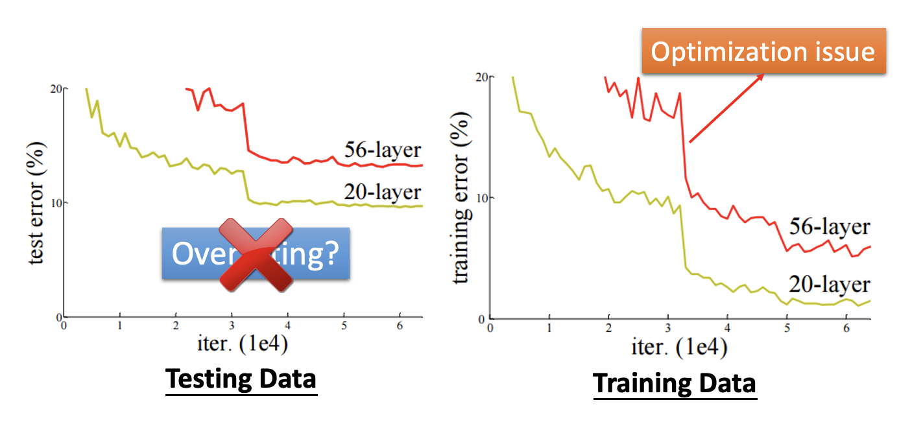
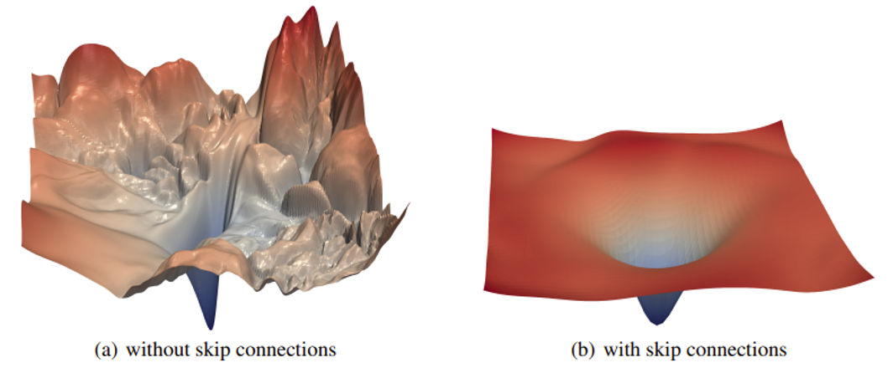
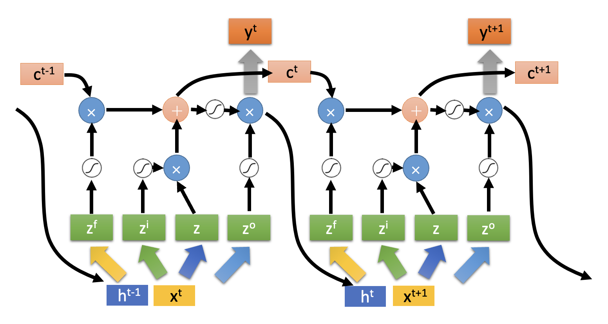
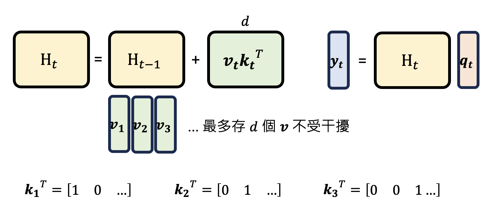
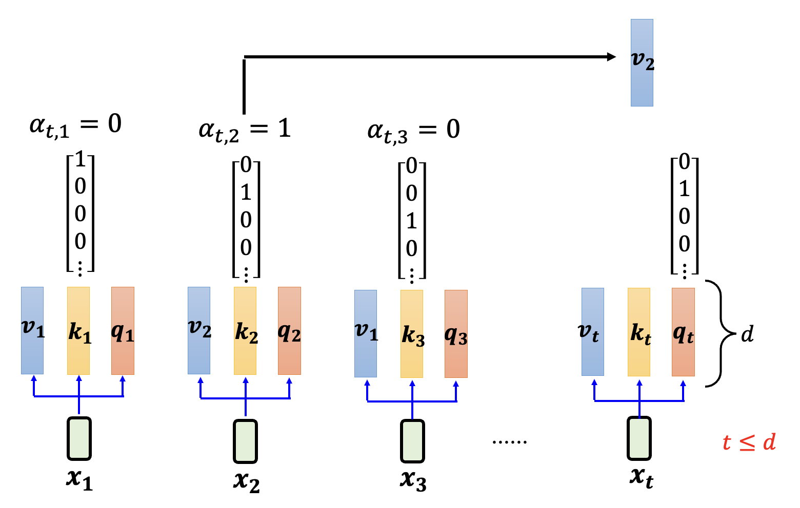
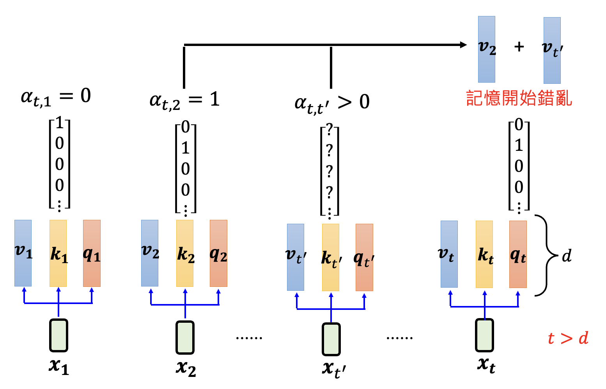
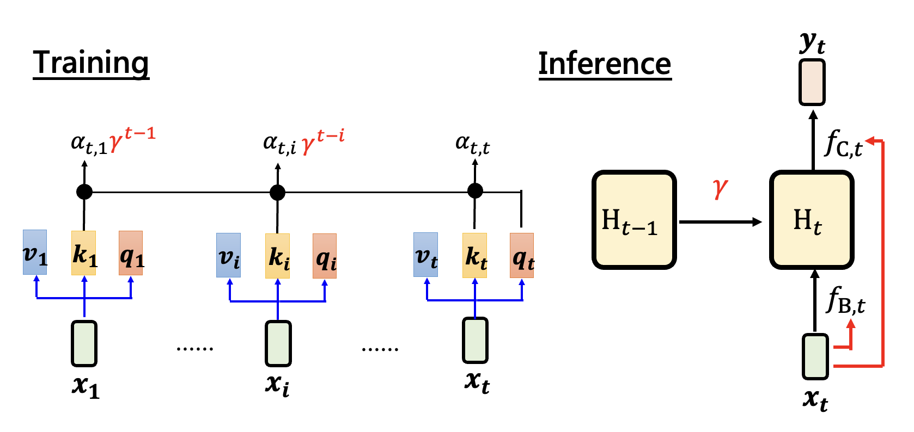
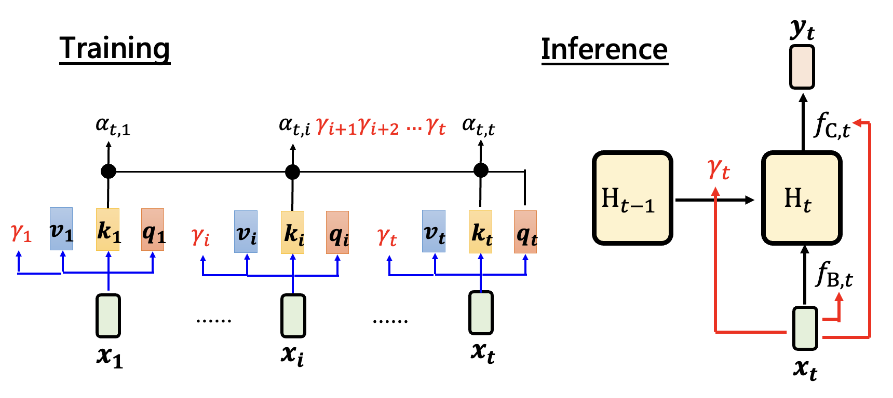
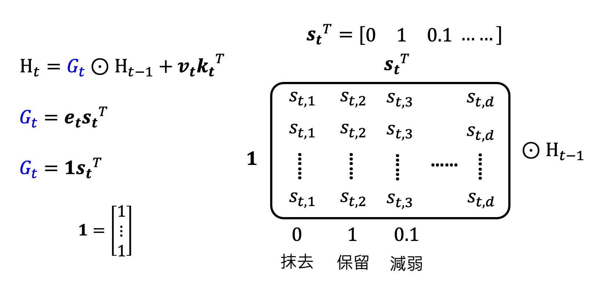

Competitors of Transformer⚓︎
约 3083 个字 预计阅读时间 15 分钟
每一种架构的存在都有一个理由：
- CNN：相比适用面更广的全连接层，卷积层有更大的模型偏移，并根据图像特征，减少不必要的参数，避免过拟合
-
残差连接(residual connection)：
-
如果没有残差连接，优化模型参数会比较吃力
 -
有了残差连接后，原本崎岖的误差曲面就会变得平滑，也就是说更容易优化了

-
RNN v.s. Attention⚓︎
那么 Transformer 架构，或者更准确地说，自注意(self-attention) 机制出现的理由是什么呢？在回答这个问题前，我们不妨先来看自注意机制的前辈和晚辈们：
- 前辈——RNN（循环神经网络 (recurrent neural network)）
- 晚辈——Mamba 架构和它的兄弟们
虽然它们的架构细节有不少差异，但是它们的共同目标都是给定一排向量的输入，输出另一排向量。
先来看 RNN 风格的架构的运作机制：有一个叫做隐藏状态(hidden state) 的模块，它把目前已知的输入混合起来并保存，并由它决定输出内容。
更详细地，RNN 风格架构的一般形式为：
其中 \(\bm{x_t}, \bm{y_t}\) 分别为第 \(t\) 个（或者说时间 \(t\)）输入向量和输出向量。这么说还是太抽象了，所以下面展示了隐藏状态的“真面目”：
- \(H_0\) 既可以是向量（早期的 RNN 中 \(H\) 就是向量
） ，也可以是矩阵 - 由于每个位置的输入向量不同，因此位置 \(t\) 上的三个函数 \(f_{A, t}, f_{B, t}, f_{C, t}\) 由输入向量决定
- 比如 \(\bm{x_2}\) 是没有什么意义的输入，那么可以利用 $f_{B, t} $ 阻止 \(\bm{x_2}\) 的传入
-
LSTM 也用到了这种技术

RNN 式的架构可用在当今流行的 AI 智能体上：
- \(H_0\)：智能体的内存
- \(f_{A, t}\)：反思模块，负责整理先前学过的知识
- \(f_{B, t}\)：写模块，写入当前观察 \(\bm{x_t}\)
- \(f_{C, t}\)：读模块，根据当前知识 \(H_t\) 做出行动 \(y_t\)
自注意式的架构如下所示。由于在《机器学习》一课中对此做过详细的解释，故此处不再赘述。
值得一提的是，注意机制并不是在 2017 年首次提出来的，早在 2014 年就有相关研究了：
下图同时列出 RNN 和注意机制下的架构。通过对比，不难发现
- RNN 每一步的计算量都是一样的
- 而注意机制下，输入越长，计算量就会越大（一个输出的计算要顾及所有输入）
或许读者会反驳说“RNN 没法记住大量信息”，因为中间的 \(H\) 只是一个有限大小的向量或矩阵——这是一个常见的误区，事实上注意机制也没法保证能记住无限长的内容，之后会解释其中原因的。
这么看来，注意机制好像一无是处，那么它为什么会这么流行，几乎支配了整个深度学习的领域了呢？在 2017 年 Attention is All You Need 的文章中（注意并不是这篇文章发明了注意机制，它只是拿掉了注意机制之外的东西
如果知道注意机制背后的原理，读者就能明白：注意机制实际上做的是一系列的矩阵运算，而 GPU 最擅长的便是这个，所以注意机制式的架构更符合 GPU 的胃口。
而 RNN 要等着一个个地读取输入并输出，中间的计算过程是串行的，所以无法利用 GPU 并行计算的优势了。
总结
| 自注意机制 | RNN | |
|---|---|---|
| 推理 | 计算量和内存需求随输入序列长度增加而增加 | 计算量和内存需求固定 |
| 训练 | 容易并行化 | 难以并行化（ |
注意这里的问号，后面就会得到解答。
Linear Attention⚓︎
总结部分指出自注意机制不太善于应付长序列，但现状是：
- RAG，AI 智能体都需要语言模型处理很长的序列
- 多模态：图像、语音是比文本更长的序列
因此最近几年人们重新认识到 RNN 的好了，于是开始思考让 RNN 训练时并行计算的可能。考虑 RNN 的两个计算公式，列出 \(H_1, H_2, \dots, H_t\) 的表达式并展开，得到：
观察发现，展开后的式子会随着 \(t\) 的增加而更复杂，而导致这种复杂性的根源就是 \(f_{A, t}\) 的存在，所以尝试将 \(f_{A, t}\) 拿掉（原来的第一个等式就变成了 \(H_t = H_{t-1} + f_{B, t}(\bm{x_t})\)
其中 \(H_t\) 是 \(d \times d\) 的矩阵。可以看到，式子变得相当简单，只剩下一些形如 \(f_{B, t}\) 的累加。为了简化表述，记 \(f_{B, t}(\bm{x_t}) = D_t\)，可得到：
接着，我们假设 \(f_{C, t}(H_t) = H_t \bm{q_t}\)，其中 \(d\) 维向量 \(\bm{q_t} = W_Q \bm{x_t}\)。所以就有了前面关于 \(\bm{y_t}\) 的等式。
最后，令 \(D_t = \bm{v_t} \bm{k_t}^T\)，其中 \(\bm{v_t} = W_v \bm{x_t}, \bm{k_t} = W_k \bm{x_t}\)（前者是 \(d'\) 维向量，后者是 \(d\) 维向量
WOW，这好像就是在做自注意计算啊——没错，除了少了 softmax 的计算外，几乎没有什么区别。我们称这个技术为线性注意力(linear attention)。下面同时列出 RNN 和线性注意力的结构图，发现它们的差异就在 \(f_{A, t}\)，即反思模块的存在。
在线性注意力中，训练的时候就像自注意机制，而推理的时候又好像 RNN。
用图形表示 \(H_t = H_{t-1} + f_{B, t}(\bm{x_t})\) 的计算过程：
展开表示 \(\bm{v_t} \bm{k_t}^T\)：
其中 \(\bm{v_t}\) 是要被写入内存的信息。如果想把 \(\bm{v_t}\) 写入 \(H\) 的第 2 列，那就让 \(k_{t, 2} = 1\)，其余 \(k\) 均置 0。
接着用图形化的方式表示 \(\bm{y_t} = f_{C, t}(H_t) = H_t \bm{q_t}\)
- \(H_t\) 的每一列存有不同的信息
- \(\bm{q_t}\) 表示从哪一列获取信息
其实线性注意力也不是什么新的想法——早在 2020 年的一篇论文（Transformers are RNNs: Fast Autoregressive Transformers with Linear Attention）就提到了 Transformer 和 RNN 就差一个 softmax。
Retention⚓︎
一种对 RNN（线性注意力）的流行度远不如 Transformer（带 softmax 的自注意）的解释是前者记忆有限，而后者有无限的记忆。
-
RNN 记忆有限是很直观的想法，因为 \(H\) 是一个 \(d \times d\) 的矩阵，每一列代表不同信息，那么最多只能记 \(d\) 个信息
- 观察线性注意力的式子 \(H_t = H_{t-1} + f_{B, t}(\bm{x_t})\)，发现前一个 \(H\) 的记录会完整的传给当前的 \(H\)，因此记忆不会发生改变
-
但 Transformer 并不是像大众所想的那样有无限的记忆力。假设向量 \(\bm{v}, \bm{q}, \bm{k}\) 都是 \(d\) 维的
-
\(t \le d\)：没有问题
 -
\(t > d\)：计算关于第 \(t\) 个输入的注意分数时，由于键 \(\bm{k}\) 容不下关于 \(t > d\) 的输入元素，所以得到的注意分数会始终大于 0，但下图所示的查询 \(\bm{q_t}\) 只想要“查询”第 2 个输入，因此记忆开始错乱

-
综上，是 softmax 改变了模型的记忆。一种通俗的解释如下图所示——从左图到右图，原本重要的第 2 个输入被后面更重要的输入所影响，softmax 后的分数显著下降，对模型而言就显得不是很重要了。
其实“记忆不变”并不是好事（不然线性注意力就能顶替掉自注意力了
-
ResNet：相比线性注意力，仅改变第一个式子：\(H_t = \textcolor{red}{\gamma} H_{t-1} + \bm{v_t} \bm{k_t}^T\)，可以让模型做到逐渐遗忘
 -
门控保留 (Gated Retention)：在 ResNet 的基础上，让 \(\gamma\) 随时间变化而变化，即 \(H_t = \textcolor{red}{\gamma_t} H_{t-1} + \bm{v_t} \bm{k_t}^T (\textcolor{red}{\gamma_t} = sigmoid(W_\gamma \bm{x_t}))\)，从而做到选择性的遗忘
 -
更复杂的保留：用矩阵 \(G_t\) 替代 \(\gamma\)，和 \(H_{t-1}\) 做按元素 (element-wise) 的相乘，即 \(H_t = \textcolor{cornflowerblue}{G_t} \odot H_{t-1} + \bm{v_t} \bm{k_t}^T\)，从而操控 \(H\) 中每个元素是否要被记忆
- 如果 \(G_t\) 没有特意设计过，就没法转化为原来的样子了（
？ ） ，这样的话用 GPU 加速就会产生问题 - 一个结论是，当 \(G_t\) 能被写成 \(G_t = \bm{e_t} \bm{s_t}^T\) 的形式
- 后来有人通过实践发现，可以直接将 \(\bm{e_t}\) 的每个元素都置 1（即 \(\bm{1} = [1\ 1\ \dots\ 1]^T\)
） ，结果和用学出来的 \(\bm{e_t}\) 计算比也没什么差距
 - 如果 \(G_t\) 没有特意设计过，就没法转化为原来的样子了（
更多的变形请见这篇论文，下面给出了一张总结的表格：
Mamba⚓︎
其中比较知名的架构是 Mamba。它不仅出现的早，而且表现也很不错。下面就是有关 Mamba 的实验结果，可以看到只有 Mamba 赢过了 Transformer，以及改进过的 Transformer++（纵轴值越小表现越好
像 Mamba 这类线性注意力的设计，最大的目的就是要加速推理。Mamba 确实也能提供很好的加速，以下是另一个实验结果（和上面的实验出自同一篇论文
现在有了参数量更大的 Mamba 的变体，如下表所示（来源
以及更大更新的模型 Minimax-01。
线性注意力的思路还用在了图像生成上，比如 Sana。
但也有研究（MambaOut: Do We Really Need Mamba for Vision?（标题玩梗 hh
现在要从头训练一个赢过 LLaMA 之类的开源大模型的模型是非常困难的。如果只是尝试用线性注意力替代自注意力，那就可以从现成的模型开始，直接将自注意层换成像 Mamba 之类的线性注意层就行了。相关研究有：
- Low-rank Linear Conversion via Attention Transfer (LoLCATs)
- The Mamba in the Llama
- Transformers to SSMs
- Linger
An Interesting Thing
有一个关于 " Is Attention All You Need? " 的赌局，内容为：到 2027 年 1 月 1 日，基于 Transformer 的模型是否仍然 NLP 领域中最强的架构。
DeltaNet⚓︎
另一个线性注意力的变形叫做 DeltaNet，它的式子是：\(H_t = H_{t-1}(I - \beta_t \bm{k_t} \bm{k_t}^T) + \beta_t \bm{v_t} \bm{k_t}^T\)。对这个式子稍作变形：\(H_t = H_{t-1} - \beta_t (H_{t-1} \bm{k_t} - \bm{v_t}) \bm{k_t}^T\)，聪明的读者也许已经发现，这和梯度下降法非常相似。
- \(H_t\)：更新后的参数
- \(H_{t-1}\)：更新前的参数
- \(\beta_t\)：学习速率
- 剩下那一串就是梯度了
损失函数 \(L_t(H) = \dfrac{1}{2} \|H\bm{k_t} - \bm{v_t}\|^2\)，所以训练的目标就是更新 \(H\)，使得 \(\bm{k_t}\) 提取出来的信息和 \(\bm{v_t}\) 越接近越好。
2025 年年初的一篇论文（Titans: Learning to Memorize at Test Time）涉及到 DeltaNet 的思想，感兴趣的读者可点击链接阅读。
评论区